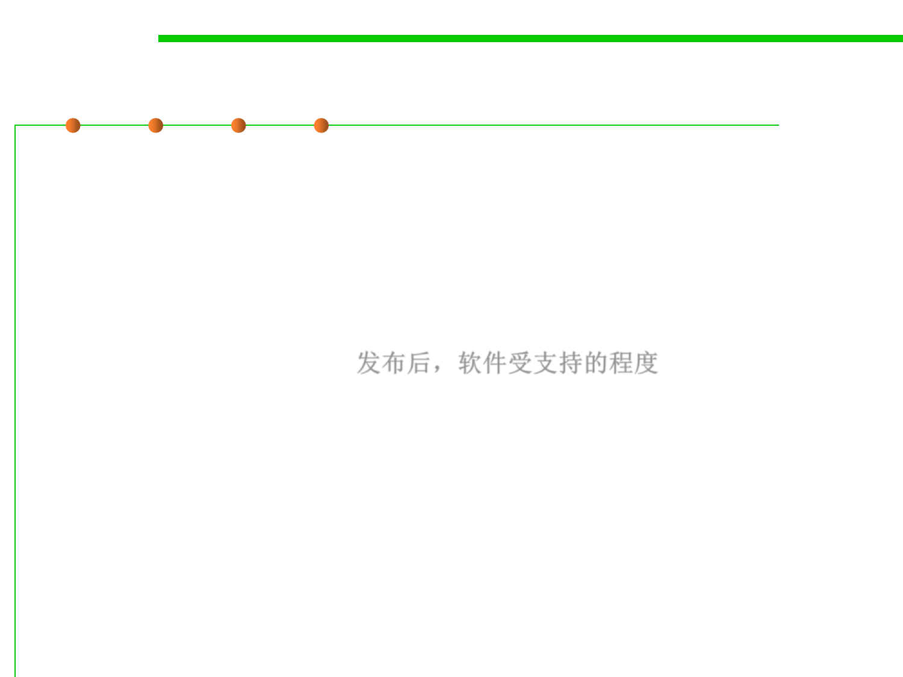

6.1 Metrics and Construction Principles for Maintainability
Many names of maintainability
▪ Manageability—How efficiently and easily a software system can
be monitored and maintained to keep the system performing,
secure, and running smoothly.
▪ Supportability—How effectively a software can be kept running
after deployment, based on resources that include quality
documentation, diagnostic information, and knowledgeable and
available technical staff. 发布后，软件受支持的程度